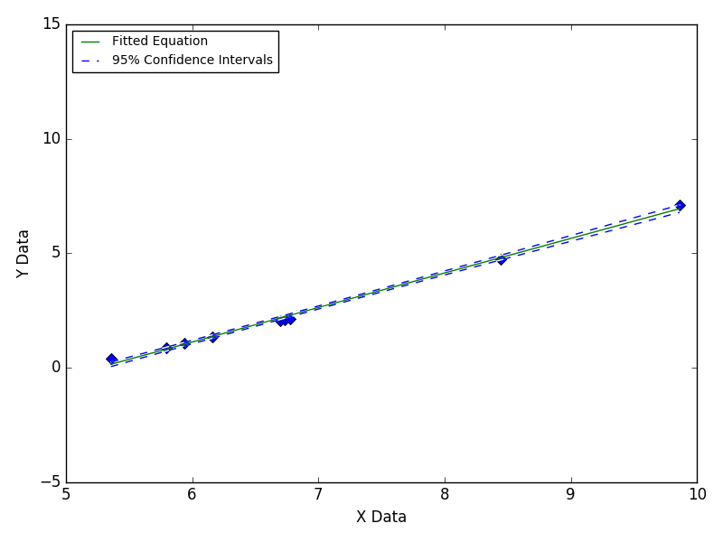
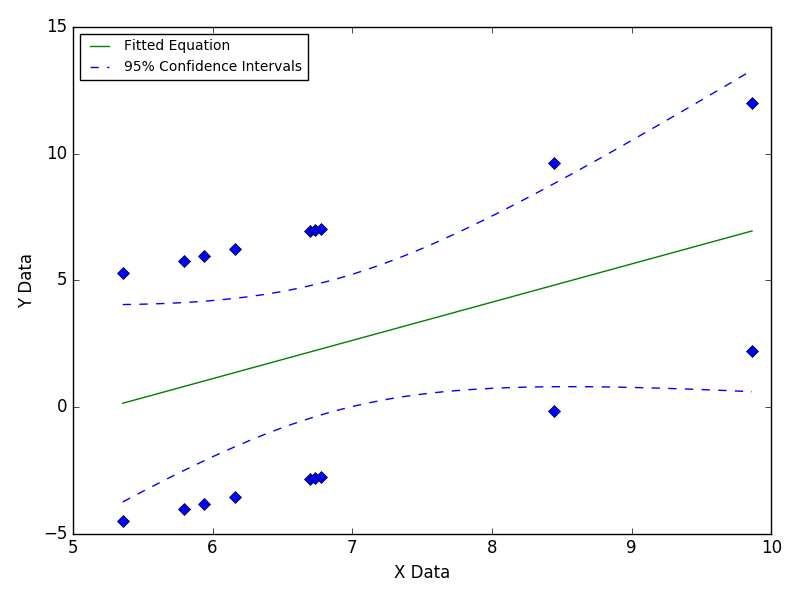

Fitting Parallel Data
This is often caused by environmental
changes during data collection, such as
temperature changes on different days
when making multiple data collection runs.
----
Still Images
-----

